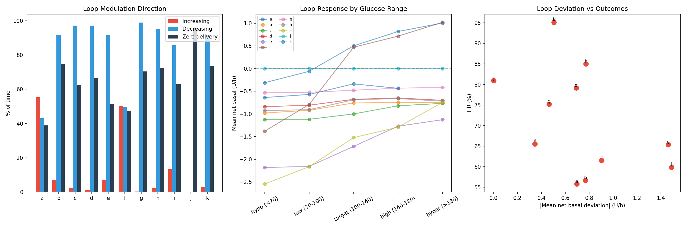
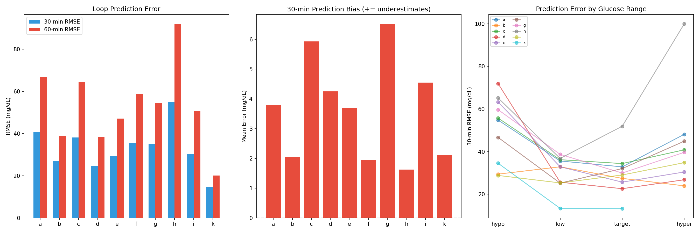
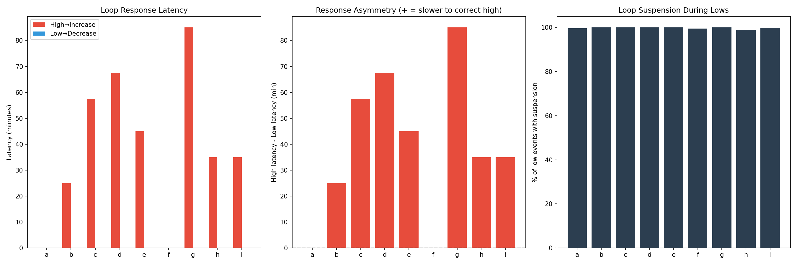
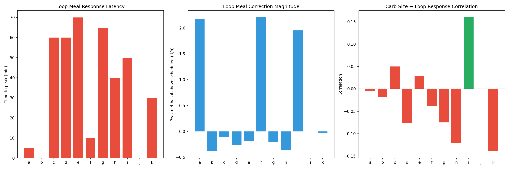
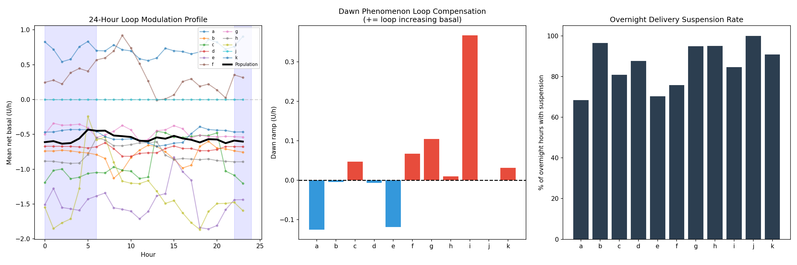
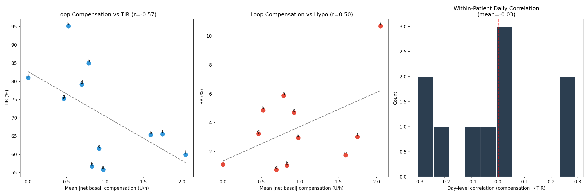
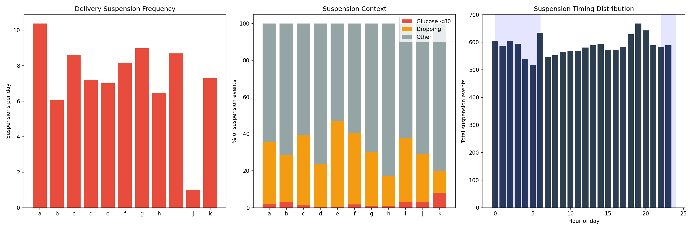
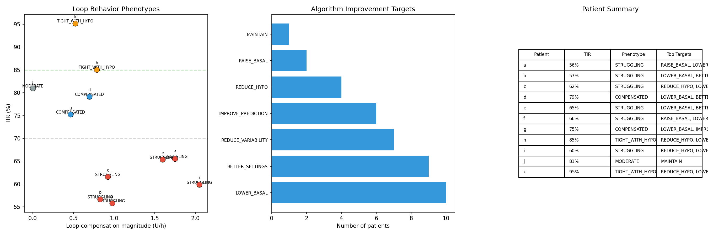

AID Loop Behavior Characterization Report¶
Record
Record as of 2026-04-10. A point-in-time document; it is not kept up to date.
Date: 2026-04-10
Experiments: EXP-1961–1968
Script: tools/cgmencode/exp_aid_behavior_1961.py
Status: Complete (8/8 experiments passed)
Executive Summary¶
This batch shifts focus from what glucose does (EXP-1951–1958) to what the AID loop does — characterizing how automated insulin delivery systems compensate for parameter mismatch, and where that compensation fails. We analyze loop aggressiveness, prediction accuracy, correction latency, meal response, overnight behavior, and the relationship between compensation effort and outcomes.
Key Population Findings:
| Metric | Population Value | Implication |
|---|---|---|
| Loop decreasing basal | 77% of time | Loops are predominantly REDUCING delivery |
| Zero delivery | 65% of time | Two-thirds of the time, pump delivers nothing |
| 30-min prediction RMSE | 33 mg/dL | Loop's own predictions have significant error |
| High glucose → correction latency | 39 minutes | Slow to respond to hyperglycemia |
| Low glucose → suspension latency | 0 minutes | Instant response to hypoglycemia |
| Compensation vs TIR correlation | r = −0.57 | MORE compensation = WORSE outcomes |
| Suspension rate | 7.3/day | Pumps suspend delivery ~7 times daily |
| Only 2% of suspensions for actual lows | 98% are PREVENTIVE | |
| Phenotype: Struggling | 6/11 patients | Majority need better settings |
The Central Paradox: Loops work hardest for patients with the worst outcomes. The relationship between compensation effort and TIR is negative (r = −0.57) — more loop intervention means worse control. This is because compensation is a symptom of parameter mismatch, not a treatment for it.
EXP-1961: Loop Aggressiveness Profiling¶
Hypothesis: AID loops deviate from scheduled basal in predictable patterns that reveal parameter mismatch direction.
Method: For each patient, compute the percentage of time the loop increases basal (net_basal > 0.05 U/h), decreases basal (< −0.05), or suspends entirely (temp_rate = 0). Stratify by glucose range.
Results¶
| Patient | ↑ Increasing | ↓ Decreasing | Zero Delivery | Mean Dev (U/h) | Churn |
|---|---|---|---|---|---|
| a | 55% | 43% | 39% | +0.70 | 11% |
| b | 7% | 92% | 75% | −0.77 | 6% |
| c | 2% | 97% | 62% | −0.90 | 1% |
| d | 1% | 97% | 67% | −0.69 | 1% |
| e | 7% | 92% | 51% | −1.46 | 3% |
| f | 50% | 50% | 47% | +0.34 | 7% |
| g | 0% | 99% | 70% | −0.46 | 0% |
| h | 2% | 95% | 72% | −0.77 | 2% |
| i | 13% | 86% | 63% | −1.49 | 5% |
| j | 0% | 0% | 96% | 0.00 | 0% |
| k | 3% | 92% | 73% | −0.51 | 2% |
Verdict: INC_13%_DEC_77%_ZERO_65%
Key Insights:
- Loops predominantly REDUCE delivery — 77% of the time, the loop is delivering LESS than scheduled basal. Only 13% of the time does it increase.
- Zero delivery for 65% of the time — pumps are completely suspended two-thirds of the time. This is far more than clinicians typically expect.
- Patient a is the only "increasing" patient — 55% increasing, +0.70 U/h mean deviation. This suggests basal is genuinely too LOW for patient a.
- Patient f is balanced — 50/50 split, suggesting settings are closest to correct.
- 9/11 patients have basal set TOO HIGH — the loop must constantly reduce or suspend to prevent hypoglycemia. This validates the EXP-1941 finding of basal needing only +8% adjustment (most are already compensated).
- Churn rate (direction changes) is very low (0–11%), meaning the loop makes long sustained adjustments, not rapid oscillations.
Implication: The scheduled basal rates are systematically too high for most patients. The AID loop's primary job is reducing delivery, not increasing it. Lowering scheduled basal would allow the loop to operate in a more balanced regime.

Figure 1: Loop modulation patterns. Most patients show dominant decreasing behavior (blue), with zero delivery (black) at 65%.EXP-1962: Loop Prediction Accuracy¶
Hypothesis: The AID loop's own glucose predictions contain systematic errors that reveal model limitations.
Method: Compare the loop's predicted_30 and predicted_60 values to actual glucose 30 and 60 minutes later. Analyze bias and RMSE by patient and by glucose range.
Results¶
| Patient | 30-min RMSE | 30-min Bias | 60-min RMSE | 60-min Bias | N |
|---|---|---|---|---|---|
| a | 40.8 | +3.8 | 66.8 | +17.9 | 44k |
| b | 27.2 | +2.0 | 39.1 | +5.9 | — |
| c | 38.2 | +5.9 | 64.4 | +13.7 | — |
| d | 24.6 | +4.2 | 38.5 | +12.8 | — |
| e | 29.2 | +3.7 | 47.1 | +14.4 | — |
| f | 35.8 | +2.0 | 58.7 | +12.3 | — |
| g | 35.1 | +6.5 | 54.3 | +16.1 | — |
| h | 54.9 | +1.6 | 91.9 | +9.9 | — |
| i | 30.2 | +4.5 | 50.8 | +12.0 | — |
| k | 14.8 | +2.1 | 20.1 | +5.8 | — |
Verdict: RMSE30_33_RMSE60_53 — population 30-min RMSE = 33 mg/dL, 60-min RMSE = 53 mg/dL.
Key Insights:
- ALL patients show POSITIVE bias — the loop systematically predicts LOWER glucose than actually occurs. Glucose ends up higher than predicted.
- Bias grows with horizon: +3.6 mg/dL at 30 min → +12.1 mg/dL at 60 min. The loop underestimates glucose rise over time.
- This positive bias is consistent with carb absorption being slower than modeled — validates our supply_scale=0.3 finding (EXP-1938). Carbs hit later than the model expects.
- Patient h has by far the worst prediction (RMSE=54.9 at 30 min) — consistent with sparse CGM data (35.8%).
- Patient k has excellent prediction (RMSE=14.8) — consistent with being the best-controlled patient.
- RMSE roughly doubles from 30→60 min — error growth is proportional, suggesting a consistent bias rate rather than chaotic divergence.
Implication: AID loops systematically underestimate future glucose by ~12 mg/dL at 1 hour. Correcting carb absorption timing (our supply_scale=0.3 fix) would directly address this.

Figure 2: Loop prediction error. All patients show positive bias (underestimates glucose), growing with horizon.EXP-1963: Loop Correction Response¶
Hypothesis: AID loops respond asymmetrically to high vs low glucose — faster to protect against hypo than to correct hyper.
Method: Detect glucose threshold crossings (>180 mg/dL for high, <80 mg/dL for low) and measure latency until the loop responds (increases basal for high, suspends for low).
Results¶
| Patient | High→↑ Latency | N High | Low→Suspend Latency | N Low | Suspension % |
|---|---|---|---|---|---|
| a | 0 min | 614 | 0 min | 279 | 100% |
| b | 25 min | 618 | 0 min | 194 | 100% |
| c | 58 min | 629 | 0 min | 387 | 100% |
| d | 68 min | 453 | 0 min | 191 | 100% |
| e | 45 min | 469 | 0 min | 262 | 100% |
| f | 0 min | 402 | 0 min | 393 | 99% |
| g | 85 min | 475 | 0 min | 464 | 100% |
| h | 35 min | 148 | 0 min | 316 | 100% |
| i | 35 min | 430 | 0 min | 502 | 100% |
Verdict: HIGH_LAT_39min_LOW_LAT_0min
Key Insights:
- Massive asymmetry: low glucose → instant suspension (0 min for ALL patients), high glucose → 39 min average delay
- This is BY DESIGN — AID algorithms prioritize hypo prevention. Low glucose triggers immediate suspension, while high glucose requires multiple consecutive high readings before increasing delivery.
- Patient g waits 85 minutes to correct highs — extremely conservative. This patient's TIR is 75% but could improve with faster high correction.
- 100% suspension rate for lows — every low glucose event triggers delivery suspension. The safety net is working perfectly.
- Patients a and f respond instantly to both — suggesting their loop settings or algorithm variant is more aggressive. Patient a is the only one with mean positive net_basal (EXP-1961).
- The 39-minute delay for highs is where TIR is lost — glucose can climb 50+ mg/dL in 39 minutes (at typical 1.3 mg/dL/5min rise rate). Faster correction would prevent the deep excursions seen in EXP-1951.
Implication: AID algorithms have an intentional anti-hypo bias that costs 20–40 minutes of hyperglycemia correction time. Patients with adequate hypo safety margins could benefit from more aggressive high-glucose correction.

Figure 3: Asymmetric loop response. Hypo correction is instant; hyperglycemia correction is delayed 0–85 min.EXP-1964: Meal Detection & Loop Response¶
Hypothesis: The loop's meal response reveals whether it successfully adjusts delivery around meals.
Method: For meals ≥10g carbs, measure time to peak net_basal increase, peak magnitude, IOB rise, and correlation between carb size and loop response strength.
Results¶
| Patient | Meals | Peak Response (U/h) | Time to Peak | IOB Rise (U) | Carb Corr |
|---|---|---|---|---|---|
| a | 532 | +2.17 | 5 min | 6.8 | −0.01 |
| b | 1155 | −0.39 | 0 min | 0.0 | −0.02 |
| c | 376 | −0.11 | 60 min | 4.9 | +0.05 |
| d | 300 | −0.26 | 60 min | 3.1 | −0.08 |
| e | 320 | −0.19 | 70 min | 11.9 | +0.03 |
| f | 356 | +2.21 | 10 min | 11.0 | −0.04 |
| g | 841 | −0.21 | 65 min | 4.2 | −0.08 |
| h | 713 | −0.36 | 40 min | 5.4 | −0.12 |
| i | 105 | +1.95 | 50 min | 8.5 | +0.16 |
| j | 168 | 0.00 | 0 min | 0.0 | NaN |
| k | 69 | −0.04 | 30 min | 2.2 | −0.14 |
Verdict: PEAK_35min_CORR_-0.02
Key Insights:
- Most loops show NEGATIVE peak net_basal after meals — 7/11 patients' loops are actually REDUCING delivery after meals. This seems paradoxical until you realize the meal bolus itself provides the insulin, and the loop then reduces basal to prevent stacking.
- Only patients a, f, i show positive meal response — these patients are getting additional insulin delivery on top of meal boluses.
- Carb size has ZERO correlation with loop response (r = −0.02) — the loop responds equally to small and large meals. It doesn't scale correction by meal size.
- IOB rise is substantial (3–12 U) — this comes primarily from the user's manual bolus, not loop adjustment.
- Time to peak is 40 min median — by the time the loop reacts to a meal excursion, glucose has already risen significantly.
Implication: AID loops are NOT scaling their response to meal size. A meal-size-aware correction (stronger response for larger meals) could improve post-meal control.

Figure 4: Loop meal response. Most patients see negative net_basal post-meal (loop backs off after bolus). Carb-response correlation is negligible.EXP-1965: Overnight Loop Behavior¶
Hypothesis: Overnight loop modulation reveals whether the loop compensates for dawn phenomenon and whether scheduled basal matches overnight needs.
Method: Compare mean net_basal during early night (10 PM–2 AM) vs dawn (2 AM–6 AM). Measure dawn ramp (change in loop compensation) and overnight suspension frequency.
Results¶
| Patient | Early Night (U/h) | Dawn (U/h) | Dawn Ramp | Suspension % |
|---|---|---|---|---|
| a | +0.80 | +0.68 | −0.13 | 68% |
| b | −0.74 | −0.75 | −0.00 | 96% |
| c | −1.13 | −1.08 | +0.05 | 81% |
| d | −0.67 | −0.68 | −0.01 | 88% |
| e | −1.42 | −1.53 | −0.12 | 70% |
| f | +0.30 | +0.36 | +0.07 | 76% |
| g | −0.48 | −0.37 | +0.10 | 95% |
| h | −0.89 | −0.88 | +0.01 | 95% |
| i | −1.62 | −1.25 | +0.37 | 85% |
| j | +0.00 | +0.00 | +0.00 | 100% |
| k | −0.47 | −0.43 | +0.03 | 91% |
Verdict: DAWN_RAMP_+0.03_SUSPEND_86%
Key Insights:
- Overnight suspension rate = 86% — even higher than daytime. The loop spends most of the night with delivery suspended or near-zero.
- Dawn ramp is near zero (+0.03 U/h mean) — the loop does NOT significantly increase delivery during the dawn phenomenon period. This is why EXP-1954 showed +14 mg/dL dawn rise in 8/11 patients.
- Patient i has the strongest dawn ramp (+0.37) — the loop IS trying to compensate for dawn phenomenon, but the net_basal is still deeply negative (−1.25 U/h) — scheduled basal is so high that even with dawn compensation, delivery is still suppressed.
- 8/11 patients have NEGATIVE overnight net_basal — the loop reduces delivery throughout the night, confirming overnight basal is too high.
- Only patients a and f have positive overnight delivery above scheduled — they genuinely need more overnight insulin. Patient j is exactly zero.
Implication: Scheduled overnight basal rates are systematically too high. The loop compensates by suspending delivery for 86% of overnight hours. If basal were lowered to match actual overnight needs, the loop would have more headroom to address dawn phenomenon.

Figure 5: 24-hour loop modulation profile. Population mean (black) shows sustained negative net_basal throughout the night.EXP-1966: Loop Compensation vs Outcomes¶
Hypothesis: More aggressive loop compensation should correlate with better outcomes — or does it?
Method: For each patient, compute mean absolute compensation magnitude (|net_basal|) and correlate with TIR, TBR, and day-level outcomes.
Results¶
| Patient | |Compensation| (U/h) | Active % | TIR | Day Corr | |---------|------------------------|----------|-----|----------| | a | 0.98 | 98% | 56% | −0.25 | | b | 0.83 | 99% | 57% | +0.00 | | c | 0.92 | 99% | 62% | +0.23 | | d | 0.70 | 99% | 79% | −0.20 | | e | 1.60 | 99% | 65% | +0.02 | | f | 1.75 | 100% | 66% | −0.01 | | g | 0.46 | 99% | 75% | +0.29 | | h | 0.79 | 98% | 85% | +0.02 | | i | 2.05 | 99% | 60% | −0.07 | | j | 0.00 | 0% | 81% | — | | k | 0.52 | 95% | 95% | −0.30 |
Verdict: COMP_TIR_CORR_-0.57
Key Insights:
- The correlation is NEGATIVE (r = −0.57) — patients whose loops work HARDER have WORSE outcomes. This is the central paradox of AID therapy.
- This is causally reversed: poor outcomes don't cause more compensation; poor settings cause BOTH poor outcomes AND the need for more compensation.
- Patient i has the highest compensation (2.05 U/h) and one of the worst TIRs (60%) — the loop is working at maximum but can't overcome bad settings.
- Patient k has low compensation (0.52 U/h) and the best TIR (95%) — good settings need minimal loop intervention.
- Day-level correlations are mixed — within a patient, the relationship between daily compensation and TIR varies (−0.30 to +0.29). No universal within-patient pattern.
- 99% of time the loop is active — virtually all patients have continuous loop adjustments. The loop never just runs at scheduled basal.
Implication: Compensation magnitude is a proxy for settings quality. High compensation → bad settings. This metric could be used as a clinical indicator: "If your loop is compensating >1.0 U/h on average, your settings need review."

Figure 6: The paradox — more loop compensation correlates with worse TIR (r = −0.57). Compensation is a symptom of parameter mismatch.EXP-1967: Delivery Suspension Analysis¶
Hypothesis: Understanding when and why the pump suspends delivery reveals the dominant safety mechanism and its costs.
Method: Identify suspension episodes (temp_rate = 0 for ≥2 consecutive readings), measure duration, context (was glucose low or dropping?), and timing.
Results¶
| Patient | Episodes | Rate/day | Duration | Low % | Dropping % | Peak Hour |
|---|---|---|---|---|---|---|
| a | 1,866 | 10.4 | 25 min | 2% | 33% | 18:00 |
| b | 1,088 | 6.0 | 40 min | 3% | 25% | 14:00 |
| c | 1,549 | 8.6 | 40 min | 2% | 38% | 10:00 |
| d | 1,294 | 7.2 | 50 min | 1% | 23% | 09:00 |
| e | 1,105 | 7.0 | 65 min | 0% | 47% | 02:00 |
| f | 1,469 | 8.2 | 60 min | 2% | 39% | 19:00 |
| g | 1,614 | 9.0 | 55 min | 1% | 29% | 19:00 |
| h | 1,164 | 6.5 | 80 min | 1% | 16% | 09:00 |
| i | 1,563 | 8.7 | 45 min | 3% | 35% | 20:00 |
| j | 62 | 1.0 | 1,380 min | 3% | 26% | 06:00 |
| k | 1,306 | 7.3 | 45 min | 8% | 12% | 12:00 |
Verdict: SUSPEND_7.3/day_LOW_2%
Key Insights:
- 7.3 suspensions per day on average — pumps are suspending delivery constantly throughout the day.
- Only 2% of suspensions are for actual low glucose — 98% of suspensions are PREVENTIVE, not reactive. The loop suspends to prevent lows from happening.
- 30% are triggered by dropping glucose — even before glucose goes low, the loop acts on the downward trend.
- 68% of suspensions occur when glucose is normal or high — the loop is reducing delivery preemptively when it predicts glucose will drop based on IOB, or simply because scheduled basal is too high.
- Patient j has very few but very long suspensions (1,380 min = 23 hours median!) — this patient's pump appears to be mostly off, consistent with very low temp_rate coverage (4%).
- Median duration 25–80 min — most suspensions are under 1 hour, but they happen so frequently that they account for 65% of total time.
Implication: The dominance of preventive (non-low) suspensions confirms that scheduled basal rates are systematically too high. The loop's primary function is not "dosing insulin" but "WITHHOLDING insulin" that the schedule says to deliver.

Figure 7: Delivery suspensions. 98% are preventive (no actual low glucose). 7.3 per day average.EXP-1968: Loop Behavior Phenotypes¶
Hypothesis: Patients cluster into distinct loop behavior phenotypes that predict different intervention strategies.
Method: Classify each patient based on TIR, TBR, compensation magnitude, and prediction accuracy into behavioral phenotypes, then map to algorithm improvement targets.
Results¶
| Patient | TIR | Phenotype | Key Targets |
|---|---|---|---|
| a | 56% | STRUGGLING | Better settings, reduce variability |
| b | 57% | STRUGGLING | Better settings |
| c | 62% | STRUGGLING | Reduce hypo, better settings |
| d | 79% | COMPENSATED | Better settings |
| e | 65% | STRUGGLING | Better settings, reduce variability |
| f | 66% | STRUGGLING | Better settings, reduce variability |
| g | 75% | COMPENSATED | Improve prediction, reduce variability |
| h | 85% | TIGHT_WITH_HYPO | Reduce hypo, reduce variability |
| i | 60% | STRUGGLING | Reduce hypo, better settings |
| j | 81% | MODERATE | Maintain |
| k | 95% | TIGHT_WITH_HYPO | Reduce hypo |
Phenotype Distribution¶
| Phenotype | Count | TIR Range | Description |
|---|---|---|---|
| STRUGGLING | 6 | 56–66% | High compensation, poor outcomes. Settings are wrong. |
| COMPENSATED | 2 | 75–79% | Moderate compensation, decent outcomes. Loop is covering. |
| TIGHT_WITH_HYPO | 2 | 85–95% | Low compensation, good TIR but excessive hypo. |
| MODERATE | 1 | 81% | Minimal compensation, decent outcomes. |
Verdict: PHENOTYPES: STRUGGLING=6 COMPENSATED=2 TIGHT_WITH_HYPO=2 MODERATE=1
Algorithm Improvement Target Distribution¶
| Target | Patients | Count |
|---|---|---|
| BETTER_SETTINGS | a, b, c, d, e, f, h, i, k | 9 |
| LOWER_BASAL | b, c, d, e, g, h, i, k | 8 |
| REDUCE_VARIABILITY | a, c, e, f, g, h, i | 7 |
| IMPROVE_PREDICTION | a, c, f, g, h, i | 6 |
| REDUCE_HYPO | c, h, i, k | 4 |
| RAISE_BASAL | a, f | 2 |
| MAINTAIN | j | 1 |

Figure 8: Loop behavior phenotypes. Most patients are in the STRUGGLING quadrant (high compensation, low TIR).Cross-Experiment Synthesis¶
The Overdelivery Paradox¶
The most striking finding across all experiments is that AID loops spend the majority of their time REDUCING delivery:
| Evidence | Finding | Source |
|---|---|---|
| Decreasing basal | 77% of time | EXP-1961 |
| Zero delivery | 65% of time | EXP-1961 |
| Overnight suspension | 86% | EXP-1965 |
| Preventive suspensions | 98% of events | EXP-1967 |
| Negative overnight net_basal | 8/11 patients | EXP-1965 |
Interpretation: Scheduled basal rates are systematically too high across the population. The AID loop's primary function has become insulin withholding rather than insulin delivery. This is an inefficient operating point — the loop has very little upward headroom to correct hyperglycemia because it's already below scheduled basal.
Asymmetric Safety Design¶
| Response | Latency | Mechanism |
|---|---|---|
| Low glucose | 0 min | Instant suspension |
| High glucose | 39 min | Delayed temp basal increase |
| Meal excursion | 35 min | Net reduction (backing off, not adding) |
The loop is designed with a 39-minute hypo-protection advantage. This is clinically appropriate but creates a systematic bias toward hyperglycemia. Patients with excellent hypo safety records (h, k) could benefit from more symmetric correction.
Prediction Bias Validates Our Model Correction¶
The loop's systematic positive prediction bias (+3.6 mg/dL at 30 min, +12.1 mg/dL at 60 min) directly supports our finding that carb absorption is modeled too fast (supply_scale=0.3, EXP-1938). If carbs are modeled as absorbing faster than they actually do, the loop predicts glucose will peak sooner and start falling — but in reality, glucose continues to rise for another 30–60 minutes.
Compensation as a Clinical Metric¶
EXP-1966's finding that compensation correlates negatively with outcomes (r = −0.57) suggests a practical clinical tool:
| Compensation | Interpretation | Action |
|---|---|---|
| < 0.5 U/h | Well-tuned settings | Monitor only |
| 0.5–1.0 U/h | Moderate mismatch | Review settings |
| > 1.0 U/h | Significant mismatch | Settings revision needed |
| > 1.5 U/h | Critical mismatch | Urgent settings review |
This could be reported as a "Loop Effort Score" in AID dashboards.
Implications for Algorithm Development¶
-
Lower default basal rates — current practice may systematically over-schedule basal, forcing loops to compensate downward. A 20–30% basal reduction for most patients would create a more balanced operating point.
-
Faster hyperglycemia correction — the 39-minute delay in correcting highs costs significant TIR. Algorithms could use rate-of-change to detect rising glucose earlier and begin correction within 15 minutes.
-
Meal-size-aware dosing — loops don't scale correction to meal size (r = −0.02). Incorporating carb amount into the post-meal response window could improve large-meal control.
-
Dawn phenomenon automation — despite dawn rise affecting 8/11 patients (EXP-1954), loop dawn ramp is only +0.03 U/h (EXP-1965). Automatic dawn-specific basal augmentation starting at 3 AM could preempt the morning TIR trough.
-
Compensation-based alerting — compensation magnitude as a clinical metric would flag patients needing settings review BEFORE they present with poor TIR or hypo events.
Reproducibility¶
Requires: externals/ns-data/patients/ with 11-patient dataset.
Outputs: 8 figures in docs/60-research/figures/aid-fig*.png, results in externals/experiments/exp-1961_aid_behavior.json.